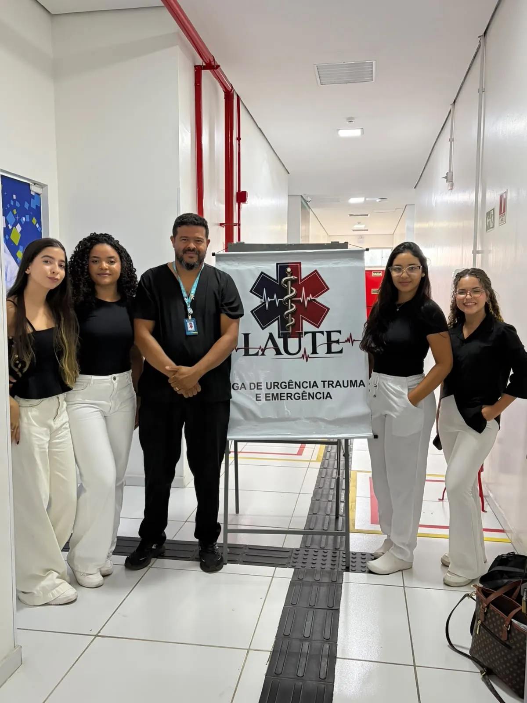
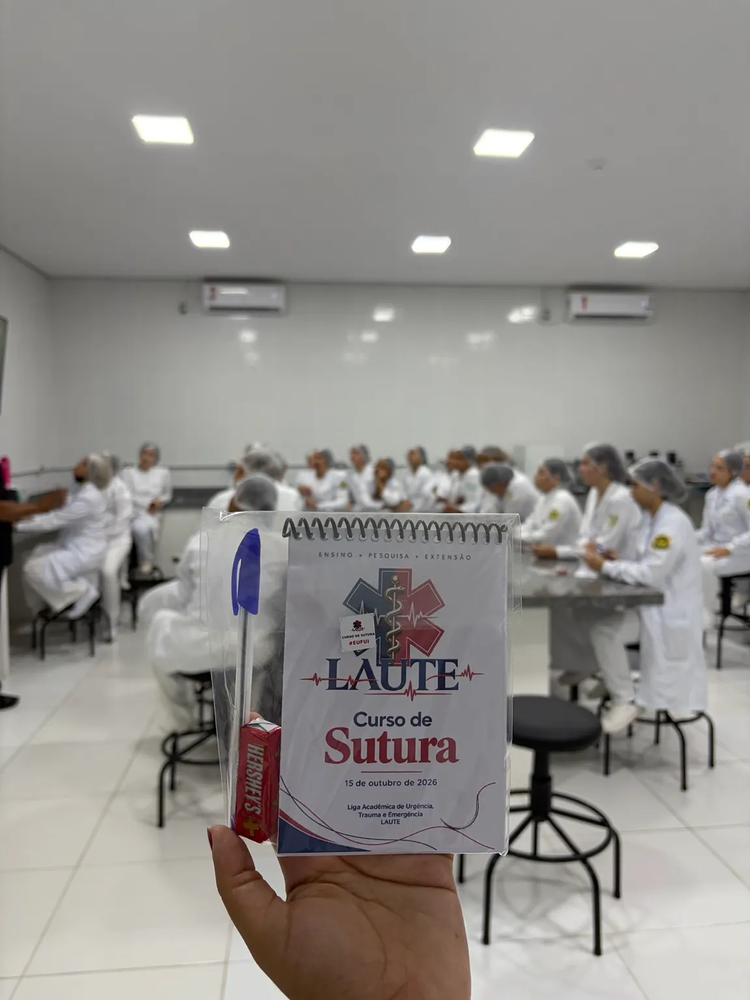

01 / APRENDER
Ensino
Aulas, encontros, cursos e simulações que aprofundam conhecimentos e incentivam uma formação crítica e responsável.
Conheça nosso caminhoSomos a LAUTE. Conectamos a formação acadêmica ao cuidado em urgência, trauma e emergência, por meio do ensino, da pesquisa e da extensão.

Aprender, investigar e compartilhar. É assim que aproximamos o conhecimento acadêmico das pessoas e dos desafios do cuidado.
Aulas, encontros, cursos e simulações que aprofundam conhecimentos e incentivam uma formação crítica e responsável.
Conheça nosso caminhoIncentivo à leitura científica, à construção de perguntas e à produção de conhecimento em urgência, trauma e emergência.
Ciência que nos orientaTrocas com a comunidade e ações educativas que conectam a universidade à sociedade, com escuta, ética e compromisso.
Cuidado que aproxima
Um novo curso da LAUTE para qualquer pessoa interessada. Escolha seu turno e amplie seus conhecimentos em primeiros socorros.
Inscrições de 22/10 a 18/11/2026. Não é obrigatório jaleco nem roupas brancas.
 EXTENSÃO ACADÊMICA
EXTENSÃO ACADÊMICAUm encontro entre conhecimento, simulação e atenção aos detalhes. Uma experiência de aprendizado com Dr. Ulysses Moura.


A LAUTE é uma liga acadêmica gerenciada por estudantes de Enfermagem, sob supervisão docente, vinculada à Estácio em São Luís.
Nosso compromisso é criar espaços de aprendizagem, estimular a ciência e fortalecer uma formação que valorize a ética, a segurança e o cuidado com as pessoas.
Nossa identidade, nosso propósitoRegistros reais das nossas atividades. Cada foto conta um pedaço dessa história.
Acompanhe as atividades, os comunicados e as próximas oportunidades da liga no nosso Instagram.
Reunimos as orientações mais importantes para quem quer conhecer a liga ou já participou dos nossos cursos.
Fale com a genteAbra a Área do participante e selecione seu curso e informe seu nome completo e e-mail cadastrado. Quando o certificado estiver liberado pela organização, a opção de baixar o PDF aparecerá na consulta.
Fale com o suporte ao participante e informe seu nome completo e o e-mail utilizado na inscrição. Não publique essas informações em comentários ou na galeria.
Não. A edição de 15 de outubro de 2026 foi realizada e está com inscrições encerradas. Acompanhe Cursos e eventos e o Instagram da liga para conhecer novas oportunidades.
As oportunidades e os processos seletivos são divulgados pelos canais oficiais da liga. Acompanhe o perfil @liga.laute_ para consultar os comunicados e os critérios de cada seleção.
Acesse Validar certificado e informe o código de autenticidade impresso no documento. Você também pode usar o QR Code presente no PDF.